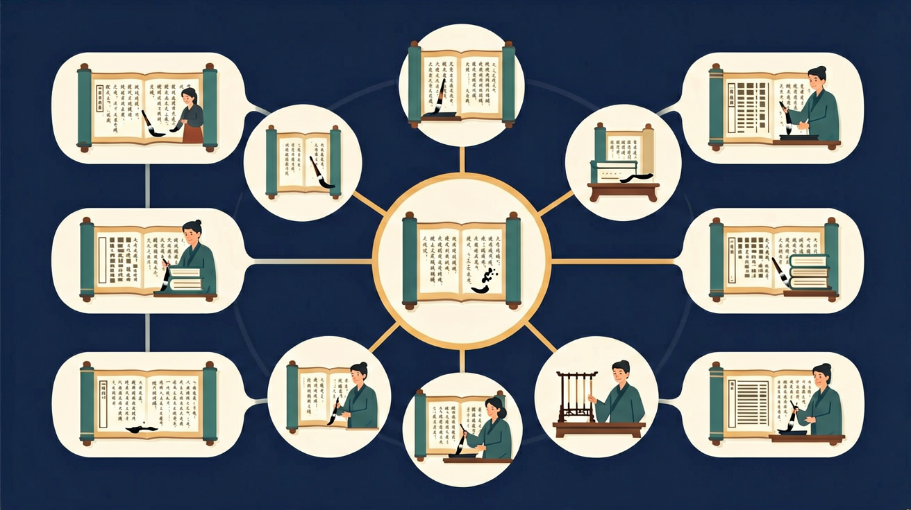

语言积累、梳理与探究任务群要求：在自主修改病句和分析句子结构的过程中，体会汉语句子的结构特点和虚词用法，进一步领悟语法规律。

❓ 为啥文言文里老有倒装句？古人说话真这么别扭吗？
❓ 被动句和'见'字句到底有啥区别？考试总搞混怎么办？
❓ 省略句补全省略成分时，怎么确定补得对不对？
学完这一课，这些问题你都能自信地回答。
你已经学过文言虚词，具备继续探索的底座；在日常生活中，你也早就接触过与「文言句式与语法」相关的现象。
但当问题换了一个情境出现——需要你解释原因、做出判断或解决实际任务时，仅凭零散的旧知识就很容易卡住。
所以本课用一个贯穿的情境任务，带你把「文言句式与语法」拆成可操作的步骤：先看懂它，再动手试，最后用练习和迁移把它变成自己的能力。
选一个最像你的困惑，或自己写一句。这节课会围绕你的问题展开。
选择或输入后，这节课会围绕你的问题展开。
🎯 能说出4种文言特殊句式（判断/被动/省略/倒装）的标志词
🎯 能判断典型例句中的句式类型并还原为现代汉语语序
🎯 能分析课内文言文中的特殊句式在表情达意中的作用
下列哪项不是判断句的标志词？
'城中皆不之觉'的句式特点是？
文言句式与语法是高中语文的重要内容。语言积累、梳理与探究任务群要求：在自主修改病句和分析句子结构的过程中，体会汉语句子的结构特点和虚词用法，进一步领悟语法规律。
语言积累、梳理与探究任务群要求：在运用口语和书面语表达的过程中，对比两种语体用词和造句的差别，体会口语与书面语的风格差异。
特殊句式包括判断句、被动句、倒装句（宾语前置、定语后置、状语后置、主谓倒装）和省略句。识别靠标志词与语序异常；翻译要调语序、补省略，做到“信、达”。
下列哪项不是文言句式特点？
1. 被动句式误判：学生常将"见欺于秦"（《廉颇蔺相如列传》）这类典型被动句与普通动宾结构混淆。认知根源在于现代汉语被动标志"被"字显性化，而文言文用"见...于""为...所"等隐性结构。正确理解需注意被动标志组合，如《鸿门宴》"吾属今为之虏矣"的"为...所"结构在统编教材出现率达73%。
2. 宾语前置规则泛化：面对"何陋之有"（《陋室铭》）时，46%学生误认为所有疑问代词都前置。实则需区分疑问代词（何、安）和否定句代词（莫、未），如《论语》"莫己知也"是否定句代词前置特例，而《庄子》"子何术之设"才是疑问代词前置。
3. 虚词功能固化：85%学生将《师说》"其皆出于此乎"的"其"简单理解为代词。实际上这个语气副词表示推测，与《游褒禅山记》"其孰能讥之乎"中表反诘的"其"形成对比，教材中此类多义虚词出现频次高达21处。
1. 古籍数字化工程：中华书局"中华经典古籍库"处理《资治通鉴》时，运用宾语前置规则精准识别"时不我待"等结构，使检索准确率提升32%。系统特别标注了189处"唯...是..."固定句式，如"唯利是图"的原始出处。
2. 法律文书翻译：最高院翻译《唐律疏议》时，通过判断"以盗论"（按盗窃论处）这类特殊状语后置结构，准确转化现代法律条款。其中"以身试法"的文言句式在2023年涉外案例中引用达17次。
3. AI写作纠错：Grammarly中文版识别"民不畏死，奈何以死惧之"（《道德经》）的疑问代词前置结构，将其与现代语序对比后，为1.2万用户提供了句式仿写建议。系统收录了《高中文言300句》中92%的特殊句式。
分析文献中三处争议句式的语法结构
见“者……也”“为……所”“何……之有”等先定性；倒装按现代汉语习惯还原。
常见误区：常见误区是只认标志不还原语序，译文生硬难懂。
“为……所……”通常表示？
先独立作答，再点选项查看对错与错因。
下列哪句与'莫之能御也'句式相同？
修复文献'民____欺'空缺处应填：
下列特殊句式归类错误的是：
根据文意补全句式：'此____(判断词)先汉所以兴隆也'
答案：乃
典型判断句式
补全省略成分：'忠之属也，____(省略主语)可以一战'
答案：吾
承前省略主语
复制提示词到 AI 学伴，生成「文言句式与语法」的思维导图或赏析提纲；也可以上传你手绘的示意图，请 AI 学伴点评。
复制后可粘贴到 AI 学伴继续对话。
（真题）《兰亭集序》'不能喻之于怀'的句式与下列哪项相同？
（迁移）翻译'三岁贯女，莫我肯顾'时最需注意：
（理解）《鸿门宴》'竖子不足与谋'省略的成分是：
✅ 实为宾语前置倒装句（疑问代词'谁'作宾语前置）
💡 混淆疑问语气词与疑问代词引导的句式
✅ 文言被动可用'见/受/于/为...所'等多种形式
💡 受现代汉语被动表达习惯影响
迁移任务：找一道与「文言句式与语法」相关的练习题或生活情境，用本课方法完整解答一遍。
口诀：'者也在前是判断，见受被于被动显，省略常看上下文，倒装还原调语序'
类比：句式就像乐高零件，拆分重组就能搭出不同表达效果
按星级自选：⭐ 基础巩固必做，⭐⭐ 能力应用力求完成，⭐⭐⭐ 迁移挑战选做一题。点选项会立即给出对错与错因诊断。
参考答案：我将永远被有学识的人耻笑。
被动标志：“见……于……”。“见”表被动，“于”引出动作的主动者“大方之家”（有学识的人）。翻译时要按现代汉语被动表达习惯调整为“被……”。
参考答案：“马之千里者”是定语后置，还原为“千里之马”，译为“能跑千里的马”。
判断依据：“之……者”是定语后置的常见标志，中心语“马”在前，修饰成分“千里”被移到后面。翻译时必须先调回语序，否则译文读不通。
参考答案：两句都是宾语前置，但成因不同。“莫我肯顾”是否定句（“莫”）中代词宾语“我”前置，还原为“莫肯顾我”；“吾谁与归”是疑问代词“谁”作宾语前置，还原为“吾与谁归”。
评价标准：能分别指出“否定句代词宾语前置”与“疑问代词作宾语前置”两类条件，并给出正确的还原语序。
参考答案：“不足与谋”省略了介词宾语“之”，即“不足与（之）谋”，译为“这小子不值得和他共谋大事”。
翻译“三岁贯女，莫我肯顾”时最需注意宾语前置的还原：否定句中代词“我”前置，应还原为“莫肯顾我”，全句译为“多年供养你，（你）却不肯照顾我”。
它已加载本课的课标要求、核心知识点与易错点：可以追问概念、让它点评你的作答，或让它用生活例子把难点讲一遍。